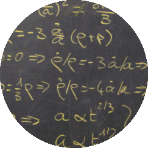

|

|
Academic courses:
- Master course on "Relativity and Cosmology" given at RWTH Aachen University, winter 2015-2016, 2016-2017, 2017-2018 (access only with RWTH L2P account)
- Master course on "The Perturbed Universe" given at RWTH Aachen University, summer 2016, 2017, 2018 (access only with RWTH L2P account)
- Master course on "Cosmology" given at the University of Bern, Spring Semester 2015
- TASI lectures on Cosmological Perturbations given at the University of Colorado, June 2012
- doctoral level course on "Advanced Cosmology" given at EPFL in the frame of EDPY, spring 2009, 2011, 2013 (on-line notes are from 2009)
- Master course on "Cosmology" given at ENS Lyon, yearly, from winter 2007-2008 to winter 2010-2011
- undergraduate level course "Introduction to Cosmology" given at the CERN student summer school, summer 2002 to 2005
- doctoral level course on "Dark Matter and Dark Energy" given at EPFL in the frame of the Ecole Doctorale de Suisse Romande, autumn 2008, in collaboration with Celine Boehm (LAPTH, Annecy)
- doctoral level course on "Inflationary Cosmology" given at EPFL in the frame of the Ecole Doctorale de Suisse Romande, spring 2006
- beginning of a doctoral level course on "Théorie linéaire des Perturbations Cosmologiques" given at LAPTH in 2000-2001
Courses on numerical tools:
- lecture on CLASS from the [Darmouth-TRIUMF-U. of Washington HEP/Cosmology Tools Bootcamp, October 2017] (general introduction to the code and presentation of eleven python scripts and notebooks illustrating most functionalities)
- lecture on CLASS from the [euclid-school16, Narbonne, August 2016] (with respect to the CLASS Tour lecture notes presented below: these slides are much more condensed, user-oriented rather than developer-oriented, more stuff on usage from pyhthon script or ipython notebook)
- short introduction to Monte Python and hands-on on Monte Python from the [EUCLID meeting, Lisbon, June 2016] (with respect to the CLASS Tour lecture notes presented below: these slides are much more condensed, and basic-usage-oriented rather than developer-oriented)
- The CLASS Tour: lecture series on CLASS and Monte Python. Given by Benjamin Audren (all but Cambridge), Deanna Hooper (Cambridge), Julien Lesgourgues, Thomas Tram (all but Cambridge), and also Jesus Torrado (London) and Miguel Zumalacarregui (Munich), at:
- [KAVLI Insitute for Cosmology, Cambridge, 11-13 Septembre 2018] including CLASS lectures on
basics,
notebooks and
coding, CLASS
exercises, MontePython
lecture, MontePyhton
exercises.
- [Kavli IPMU, Tokyo, 27-31 Octobre 2014] (most pedagogical version, includes exercises)
- [Barcelona, 6-10 Octobre 2014] (available on request)
- [King's & UCL, London, 11-16 May 2014]
- [Uni. Geneva, 31 March - 03 April 2014] (available on request)
- [MPA, Munich, 17-21 March 2014] (available on request)
- [UNAM, Mexico City, 14-17 Octobre 2013] (available on request)
|
|